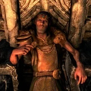
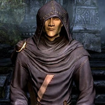
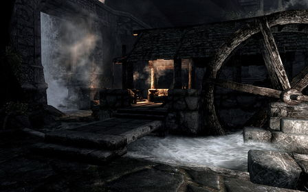

Маркарт — крупный город на западе Скайрима, столица холда Предел. Один из крупнейших городов провинции. Построен на развалинах древнего двемерского города Нчуанд-Зел.Большинство строений Маркарта высечены прямо в его высоких скалах, а сооружения на поверхности полностью сделаны из камня. Даже внутреннее убранство в основном каменное (включая кровати и стулья). Всё это делает Маркарт одним из самых защищённых городов провинции от нападения любого врага, включая драконов.В Маркарте можно выделить собственно город — та часть, в которой находятся Храм Дибеллы, все дома, магазины и Подкаменную крепость. На входе в город расположен рынок, где торгуют едой и ювелирными украшениями. Храм Дибеллы стоит на вершине утёса в центре.В Подкаменной крепости живёт ярл Маркарта, его личные кузнец и повар, а также придворный маг и учёный Колсельмо. Там же располагается Зал мёртвых, Музей двемеров, в котором собраны все найденные артефакты этой расы (в основном они найдены в самом Маркарте), лаборатория Колсельмо и раскопки двемерского города Нчуанд-Зел. Чтобы попасть в музей, нужно сначала выполнить квест придворного мага Колсельмо — выдающегося исследователя двемеров.
История
Маркарт (в переводе с языка ричменов — «Над Картом») основан на месте города Нчуанд-Зел, построенного древними двемерами. Данная раса проживала в Морровинде, Скайриме и Хаммерфелле во времена Первой эры. Вследствие исчезновения двемеров с лица Нирна (см. книгу «Битва у Красной горы»), после их попыток контролировать силу Нумидиума, Маркарт был захвачен окрестными племенами. Город периодически захватывался возникавшими в Сиродиле империями (Алессианской, империи Реманов, и, чисто номинально, входил в состав Сиродильской империи в период правления её династии императоров Длинного Дома), но после их падения вновь оказывался во власти предельцев, контролировавших его до прихода в эти края Империи Септимов — Третьей Сиродильской империи, которая возникла под руководством Тайбера Септима и разрослась при власти его преемника — Пелагия I Септима. В Маркарте император Тайбер Септим основал Имперский колледж Голоса, что впоследствии сделало место привлекательным для поселения в нём нордов и дальнейшего развития.В отличие от двемерских городов и крепостей расположенных в Морровинде, город Маркарт построен не из металла, а из камня. Вероятнее всего это связанно со строением рельефа, так как на Вварденфелле нет особо твёрдых горных пород, из которой можно строить здания. Во время Великой войны в городе произошло восстание жителей против власти Империи (174–176 гг. 4Э), под предводительством Маданаха. Норды были изгнаны из города. После жестокого подавления восстания Ульфриком Буревестником, норды вернулись в город, уцелевшие же мятежники, начавшие называть себя Изгоями, рассеялись по Пределу и начали партизанскую войну, продолжающуюся до сих пор. В городе большое влияние имеет семья Серебряная Кровь. Она владеет городской таверной, сокровищницей и серебряным рудником «Шахта Сидна», который по совместительству является городской тюрьмой. Большинство жителей города, как правило, весьма недружелюбны к посторонним.
Важные места и жители
Администрация | |
Подкаменная крепость | |
| Ярл Игмунд | Айкантар |
|  |  |
Галерея
|  | .jpg) | .jpg) |
| Маркарт | Водопад | Подземелье двемеров |